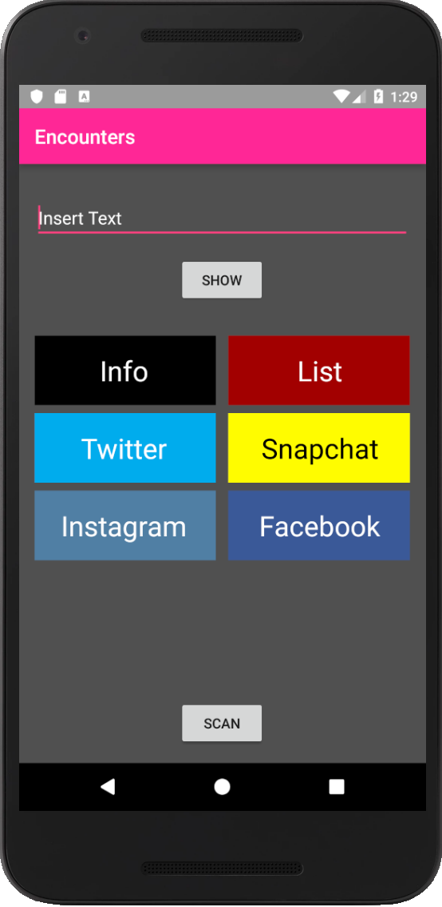

Encounters
1. Android App

Die App ermöglich das schnelle außtauschen von Kontakdaten durch einen QR-Code Generator und Scanner. Außerdem ermöglich sie das anzeigen von Text und Listen in der größt möglichen Fontsize.
Meine aller erste App Encounters entstand um mir das Nachtleben zu erleichtern. Früher war ich oft in Clubs unterwegs in denen sehr laute Musik gespielt wurde. Unterhaltungen und z.B. der austausch der Handynummer erfolgten wegen der Lautstärke auf dem Dancefloor oft über Notiz Apps auf dem Handy, die im angetrunken Zustand nicht immer leicht zu lesen waren. Außerdem war es damals oft möglich beim DJ musikwünsche zu äußern. Dies erfolgte auch meist über eine Notiz App. Meist musste das Handy dem DJ übergeben werden, da er es wegen der kleinen Schrift aus der Entfernung nicht lesen konnte. Diese zwei Probleme wollte ich mit dieser App lösen. Auf dem Hauptscreen kann man deshalb direkt eine Nachricht, oder Musikwunsch eingeben, der dann in der größtmöglichen Fontsize im Fullscreen angezeigt wird. Auserdem können in der Info Activity die wichtigsten Kontaktdaten eingetragen und ein QR-Code generiert werden. Dieser kann von jedem QR-Scanner gescannt werden und fügt automatisch den Nutzer in die Kontakte des Scannenden ein. Für die Musikwünsche gibt es eine Listenfunktion, in der bis zu 3 Lieder eingetragen werden können, die dann ebenfalls im Fullscreen angezeigt werden. Die App wird auch nach Jahren noch immer regelmäßig von mir benutz.